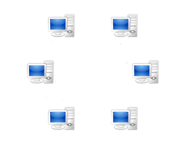
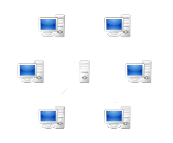
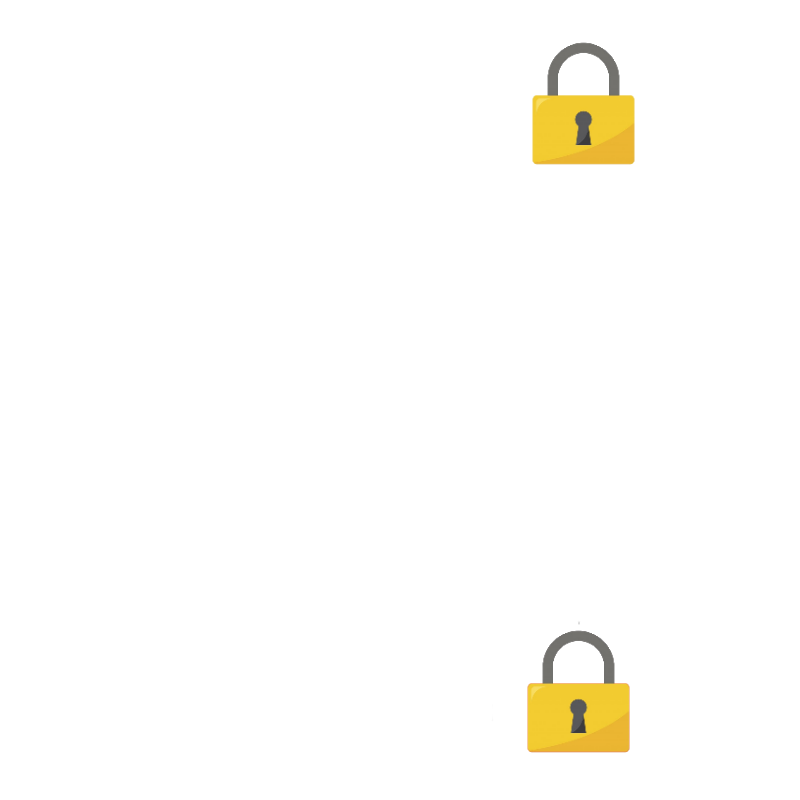
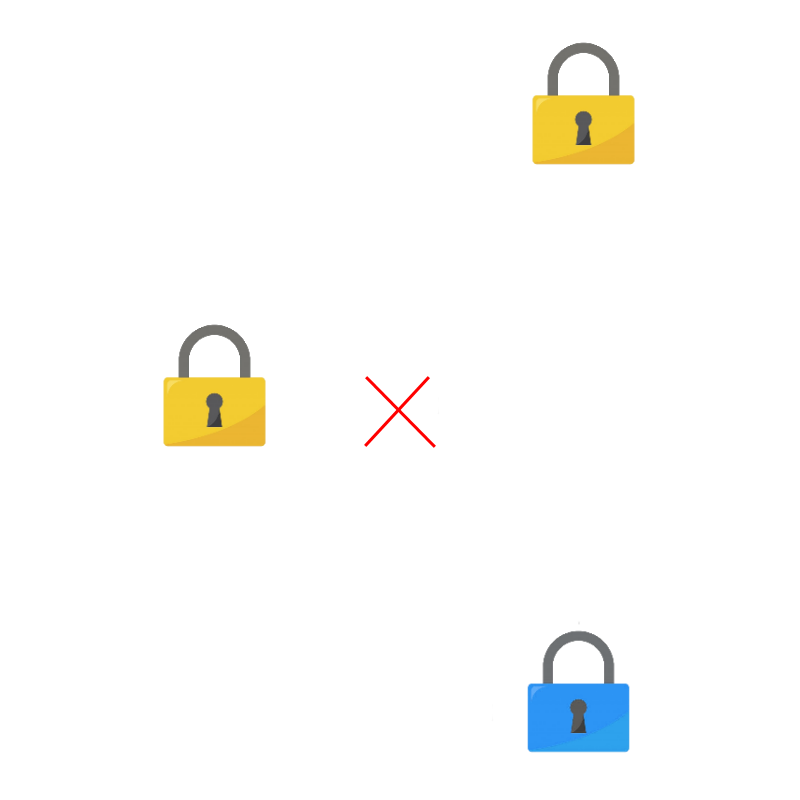

Les cryptomonnaies sont des monnaies virtuelles mais contrairement aux banques traditionnelles,
elles sont basées sur la blockchain. Elles sont décentralisées,
et donc plus sécurisées du au fait que les transactions sont validées par un ensemble d’utilisateurs.
Il est souvent dit que les cryptomonnaies sont anonymes, car elles ne sont pas liées à un nom d’utilisateur.
Mais elles sont en réalité retraçable car toutes les transactions sont écrites dans la blockchain.
Qu'est ce qu’est la Blockchain ?
Une blockchain est une technologie de stockage de données décentralisé,
en peer to peer, ou en pair à pair.
Elle fonctionne donc sans organe central car chaque utilisateur est un nœud,
et doit assumer des fonctions serveur.
La blockchain est une base de données qui est hébergée par tous les pairs.

Réseau décentralisé

Réseau centralisé
Comment fonctionne la blockchain ?
Une blockchain est comme son nom l’indique une chaîne de blocs dans lesquelles sont inscrites les transactions,
elles doivent être scellées avec un hash à chiffrage asymétrique,
c’est un chiffrage qui possède une clé pour le chiffrage (clé publique) et une autre clé pour le déchiffrage (clé privée).
Mais il y a une difficulté au calcul des ces hashs,
elle est ajustée pour qu’un bloc soit généré en moyenne toutes les 10 minutes.
Par exemple: les hashs doivent commencer par un certain nombre de zéro,
et donc il faut tester des combinaisons aléatoires jusqu'à obtenir le bon hash.
Tout cela utilise énormément de puissance de calcul.

Chiffrement symétrique

Chiffrement asymétrique
Quand un utilisateur trouve le bon hash et envoie son bloc,
il est inscrit dans la blockchain et reçoit un certain nombre de bitcoin qui sont générés,
ces personnes sont appelés “mineurs” car quand notre économie était basé sur l’or,
les mineurs étaient les seuls à apporter de la masse monétaire tout comme les mineurs de bitcoin.